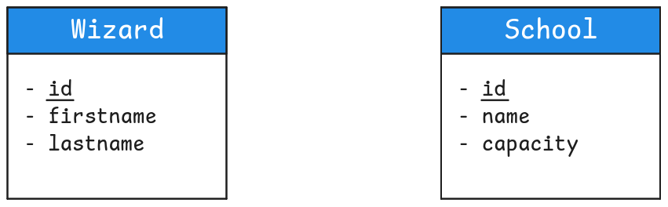
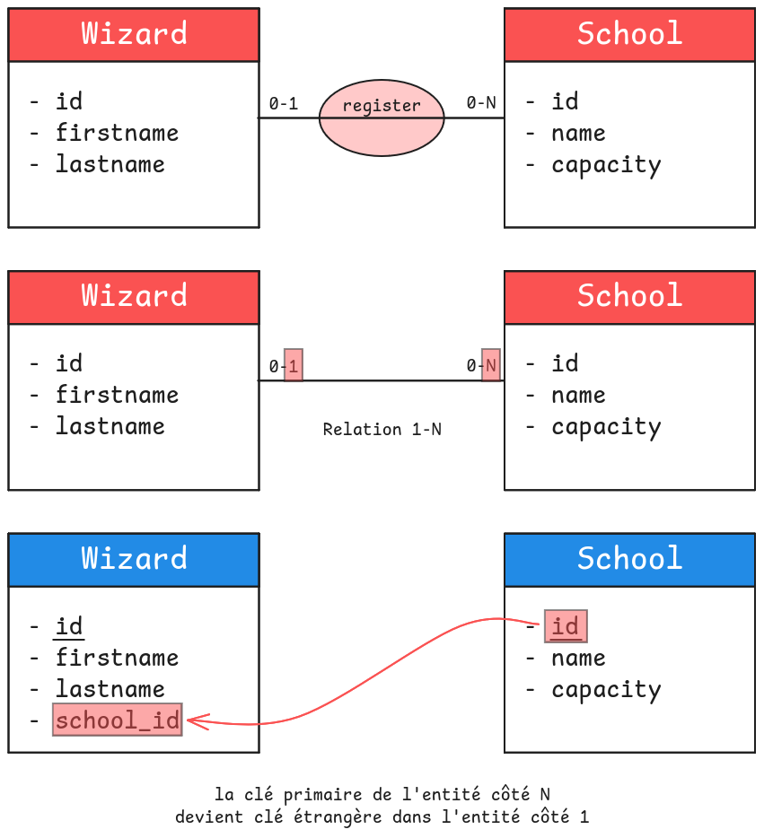
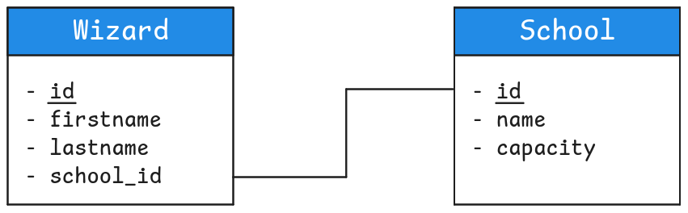
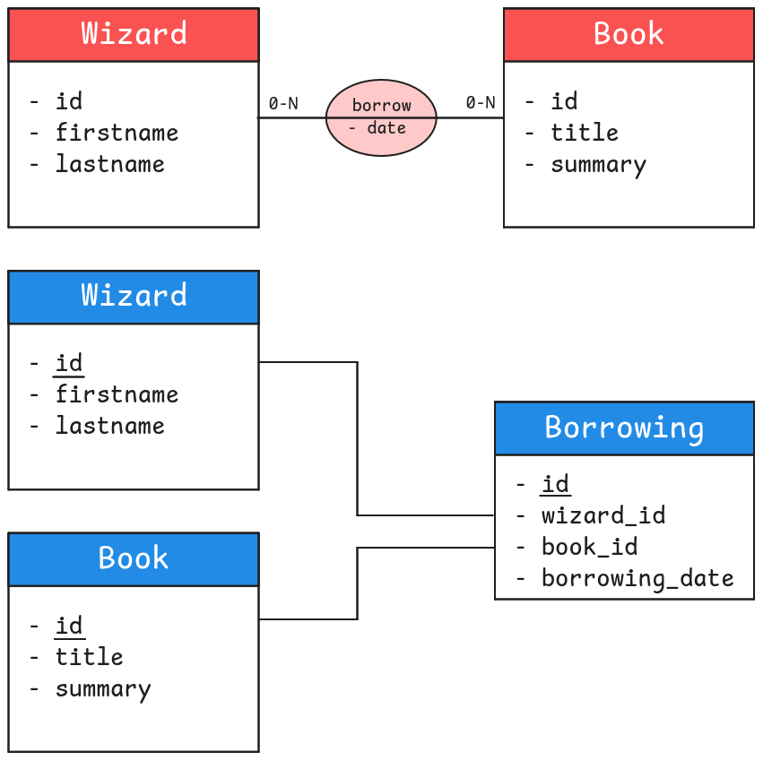
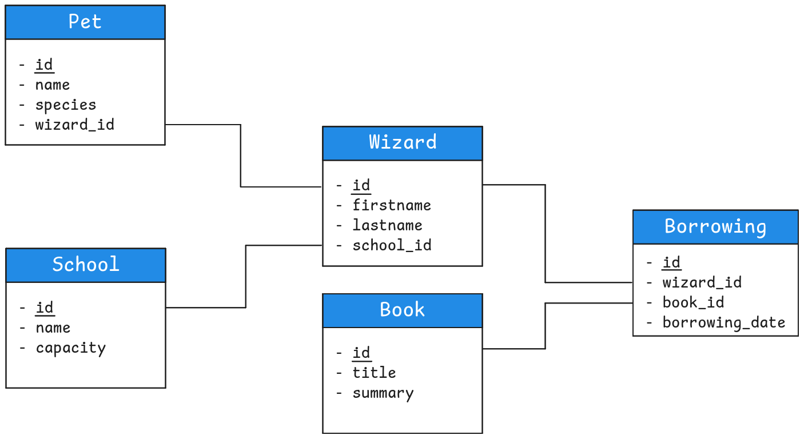
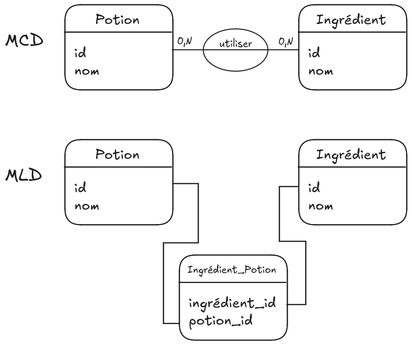

04.2 - Les bases de la modélisation : MLD
Objectifs
- Approfondir la méthode Merise
- Comprendre la construction d'un MLD
Introduction
Pour pouvoir créer une base de données, tu as découvert la construction d'un MCD. L'étape suivante est de le convertir en MLD.
Sommaire
La méthode Merise (rappels)
Modéliser une base de données est une étape cruciale mais complexe. Elle dépend avant tout de la compréhension des règles métiers, c'est-à-dire des besoins du client. Parfois, plusieurs façons de modéliser une base peuvent répondre à ces besoins.
Bref, cela demande avant tout de la rigueur et de l’expérience. La méthodologie Merise (datant des années 70) apporte des règles précises pour t’aider à modéliser convenablement tes données.
La méthode Merise est très vaste. Nous ne la couvrirons pas de manière exhaustive. Nous allons l'aborder de manière pragmatique.
Avec le contenu de cette quête, tu pourras réaliser rapidement des modélisations simples. N’hésite pas à t’intéresser davantage à Merise par la suite, afin d’acquérir un certain vocabulaire et des solutions pour résoudre des cas plus complexes.
Dans le cadre de la formation, tu ne vas utiliser "que" 3 modèles de la méthode Merise. Dans l'ordre :
- MCD : Modèle Conceptuel de Données
- MLD : Modèle Logique de Données
- MPD : Modèle Physique de Données
Cette quête décrit l'étape 2 : le Modèle Logique de Données (MLD).
MLD : les tables et les champs
Précédemment, nous avons construit ce MCD :

Comment passer de ce schéma avec des entités et des relations à des tables et des champs dans une base de données ? Pour cela, tu dois procéder à quelques transformations. Pour les entités :
- Chaque entité devient une table.
- Chaque propriété de l’entité devient un champ de la table.
- Les identifiants deviennent des clés primaires.

Là, c’était la partie la plus facile. La partie plus délicate concerne les relations. En fonction des cardinalités d’une relation, le résultat au niveau du schéma de base de données va être différent.
Les types de relations
Comment relier les données d’une table avec celles d’une autre table ? Considère un sorcier (un tuple de la table wizard, identifié par sa clé primaire id) scolarisé dans une école (un tuple de la table school, identifié par sa clé primaire, également appelée id).
-
Comme tu l’as vu plus haut, un élève ne peut être inscrit que dans 0 à 1 école à la fois..
-
La relation inverse school->wizard est quant à elle de type 0 à N : une école peut en effet accueillir de 0 à N élèves.
Maintenant que tu as les cardinalités de ta relation dans les deux sens, regarde les bornes maximales : le 1 de "0 à 1" et le N de "0 à N". Ce sont ces maximales qui nous intéressent pour la suite. Tu te retrouves donc avec une relation 1-N.
Tu peux obtenir trois combinaisons de valeurs maximales, donc trois types de relation :
-
One To One (1-1) : une relation unique entre deux entités. Par exemple, un Sorcier ne pourra posséder qu’un et un seul Familier, et un Familier n’appartient qu’à un seul et un seul Sorcier.
-
One To Many (1-N) : c’est le cas juste au-dessus où un Sorcier s'inscrit dans une seule École et où dans une École peuvent s'inscrire plusieurs Sorciers. Tu peux aussi parler de Many To One si tu le lis dans l'autre sens : c'est la même chose.
-
Many To Many (N-N) : une entité peut interagir avec plusieurs éléments d’une autre entité, et vice versa. Par exemple, un Sorcier peut emprunter plusieurs Livres, et un Livre peut être emprunté par plusieurs Sorciers.
Les clés étrangères
Maintenant que tu connais les types de relation, tu dois trouver un moyen concret (autre qu’un trait) pour indiquer qu'une table est reliée à une autre table.
One To Many / Many To One
Considère à nouveau l’exemple One To Many entre wizard et school. Le 1 de la relation 1-N est côté wizard tandis que le N est côté school. Cette fois, le sens est très important : cela veut dire que côté wizard, tu as une valeur à stocker (l'id de son école) alors que côté school tu as une liste de valeur à stocker (la liste des ids de ses élèves). Dans l'orthodoxie des bases de données, un champ doit stocker une seule valeur : tu ne devrais jamais stocker plusieurs valeurs (une liste) dans un seul champ.
En suivant ce principe, c’est dans la table wizard que tu dois ajouter un nouveau champ. Son but est de concrétiser le lien entre les deux tables. Dans ce contexte, par convention tu l’appellerais school_id. Pour chaque tuple, le but de ce champ sera de prendre la valeur de la clé primaire de la table school, identifiant l’école dans laquelle ce sorcier est inscrit.

Pour faciliter la lecture, garde des traits pour indiquer les liens entre clés primaires/étrangères. Mais maintenant, les relations sont concrétisées par les clés étrangères. Ton MCD est devenu un MLD :

En règle générale, une clé étrangère fait référence à une clé primaire d’une autre table (puisque la clé primaire permet d’identifier formellement un tuple) mais tu pourrais très bien faire référence à un autre champ “unique” de la table si celle-ci en possède.
Les règles de création des clés étrangères dépendent du type de relation entre les entités.
Règle de base : la clé primaire de l'entité côté N devient clé étrangère dans l'entité côté 1.
Tu peux appliquer cette règle pour les relations One To Many / Many To One. Voyons les autres cas.
One To One
Reprends l’exemple donné plus haut d’un Sorcier (table wizard) qui possède un et un seul Familier (table pet), un Familier appartenant à un et un seul Sorcier. Dans ce cas, il y a deux "côté 1"...
Tu dois créer une seule clé étrangère pour représenter une relation : mettre une clé étrangère de chaque côté reviendrait à stocker une même information 2 fois.
Que ferais-tu dans ce cas ? Côté wizard ou côté pet ?
Voir la solution
Les 2 solutions sont bonnes. C’est à toi de choisir la solution qui te semble la plus pratique, en fonction des requêtes que tu devras faire :
- Soit tu crées une clé étrangère
pet_iddans la tablewizard. - Soit tu crées une clé étrangère
wizard_iddans la tablepet.
Many To Many
Retournons dans notre histoire de bibliohèque : un élève peut emprunter plusieurs livres, et un livre peut être emprunté par plusieurs élèves. Pas de "côté 1"...
Dans ce cas, tu ne peux ni mettre une clé book_id dans wizard, ni mettre une clé wizard_id dans book. Ni d'un côté, ni de l'autre : ta solution est au milieu. Tu dois créer une nouvelle table intermédiaire qui va contenir les deux clés étrangères.
Par convention, une table intermédiaire (aussi table de jointure) est nommé d'après les noms des tables jointes, dans l'ordre alphabétique. Pour Wizard et Book, cela donnerait Book_Wizard. Tu peux aussi donner un "vrai" nom si tu en as un évident. Plutôt que Book_Wizard, la table pourrait s’appeler par exemple Borrowing (emprunt).
Selon les cas, la clé primaire pourra être composite, c’est-à-dire définie par le couple de clés étrangères wizard_id ET book_id. Dans cet exemple, un même sorcier peut emprunter un même livre à différentes dates. Dans ce cas, il faudrait plutôt créer une clé primaire auto-incrémentée pour s’assurer de l’unicité de la clé. Si besoin, cette table intermédiaire peut également accueillir des champs supplémentaires (par exemple une date de retour) qui ne seraient à leur place ni dans la table wizard, ni dans la table book.

Ces différentes règles te permettent de transformer un MCD en un MLD.
En reprenant chacune des relations que nous avons évoqué, tu peux arriver à un modèle complet :

Challenge
Bienvenue au cours de potions magiques (étape 2) !
Chaque potion que tu vas créer a un nom. Les potions utilisent des ingrédients, et chaque ingrédient est défini par son nom.
Ça fait beaucoup d’informations à retenir... Pour ne rien oublier, tu aimerais stocker en base de données les ingrédients nécessaires pour chaque potion. J'ai travaillé ce MCD pour t'aider :

Prends un papier et un crayon (ou rends-toi sur https://excalidraw.com/), et dessine le MLD qui correspond au MCD proposé.
Critères de validation
- Une photo de la modélisation est postée
- La modélisation contient le MLD
- La modélisation permet de stocker les informations sur les ingrédients utilisés dans chaque potion.
Une solution possible :
